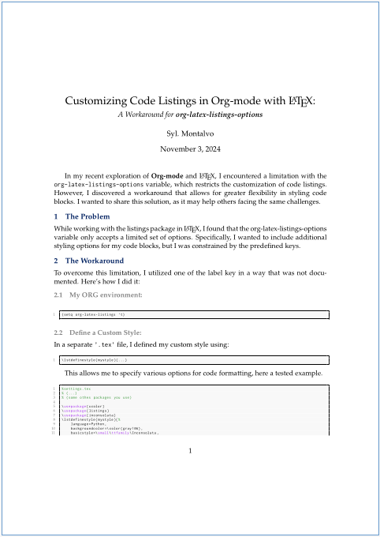

Customizing Code listings In OrgMode Latex
In my recent exploration of Org-mode and LaTeX, I encountered a limitation with the org-latex-listings-options variable, which restricts the customization of code listings. However, I discovered a workaround that allows for greater flexibility in styling code blocks. I wanted to share this solution, as it may help others facing the same challenges.

The Problem
While working with the listings package in LaTeX, I found that the org-latex-listings-options variable only accepts a limited set of parameters. Specifically, I wanted to include additional styling preferences for my code blocks, but I was constrained by the predefined keys.
The Workaround
To overcome this limitation, I utilized one of the label key in a way that was not documented. Here’s how I did it:
My ORG environment:
(setq org-latex-listings 't)
Define a Custom Style:
In a separate '.tex' file, I defined my custom style using:
\lstdefinestyle{mystyle}{...}
This allows me to specify various options for code formatting, here a tested example.
%settings.tex
% (...)
% (some othes packages you use)
\usepackage{xcolor}
\usepackage{listings}
\usepackage{inconsolata}
\lstdefinestyle{mystyle}{%
language=Python,
backgroundcolor=\color{gray!06},
basicstyle=\small\ttfamily\Inconsolata,
aboveskip={1.0\baselineskip},
belowskip={1.0\baselineskip},
columns=fixed,
extendedchars=true,
breaklines=true,
tabsize=4,
prebreak=\raisebox{0ex}[0ex][0ex]{\ensuremath{\hookleftarrow}},
frame=single,
xleftmargin=2em,
showtabs=false,
showspaces=false,
showstringspaces=false,
keywordstyle=\color[rgb]{0.627,0.126,0.941},
commentstyle=\color[rgb]{0.133,0.545,0.133},
stringstyle=\color[rgb]{0.6,0,0},
numbers=left,
numberstyle=\tiny\color{gray},
stepnumber=1,
numbersep=10pt,
captionpos=t,
escapeinside=
}
Load the Settings Document:
I load this settings document in my Org file using the LATEX_HEADER directive. This allowed me to apply all the options defined in mystyle to my document.
#+LATEX_HEADER: \input{~/path-to/settings.tex}
Explicitly Set Options:
Despite this workaround, I found that some options, such as numbers and numberstyle, were ignored when defined in the custom style. To ensure these options were applied, I explicitly added them to the org-latex-listings-options variable in my Emacs configuration:
(setq org-latex-listings 't)
(setq org-latex-listings-options
'(("language" "Python")
("style" "mystyle")
("numbers" "left")
("numberstyle" "\\tiny\\color{gray}")))
Documentation Reference.
I did the above following documentation found by typing in EMACS: C-h v RET org-latex-listings-options RET
Original value was nil
Association list of options for the latex listings package.
These options are supplied as a comma-separated list to the
\lstset command. Each element of the association list should be
a list or cons cell containing two strings: the name of the
option, and the value. For example,
(setq org-latex-listings-options
'(("basicstyle" "\\small")
("keywordstyle" "\\color{black}\\bfseries\\underbar")))
; or
(setq org-latex-listings-options
'(("basicstyle" . "\\small")
("keywordstyle" . "\\color{black}\\bfseries\\underbar")))
will typeset the code in a small size font with underlined, bold
black keywords.
Note that the same options will be applied to blocks of all
languages. If you need block-specific options, you may use the
following syntax:
#+ATTR_LATEX: :options key1=value1,key2=value2
#+BEGIN_SRC <LANG>
...
\#+END_SRC
Example Org File
Here's a minimal example of how your Org file might look whit these settings.
#+TITLE: Customizing Code Listings in Org-mode with LaTeX:
#+SUBTITLE: /A Workaround for *org-latex-listings-options*/
#+AUTHOR: Syl. Montalvo
#+LaTeX_CLASS_OPTIONS: [a4paper, 11pt]
#+LATEX_HEADER: \usepackage[a4paper, total={6in, 8in}]{geometry}
#+OPTIONS: toc:nil
#+LATEX_HEADER: \input{~/path-to/settings.tex}
#+BEGIN_SRC python
print("Hello, World!")
\#+END_SRC
And here is a screenshot to give the reader an idea of what it looks like. 